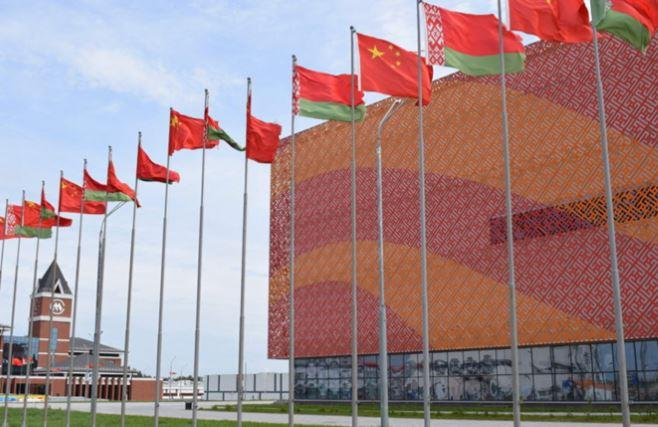
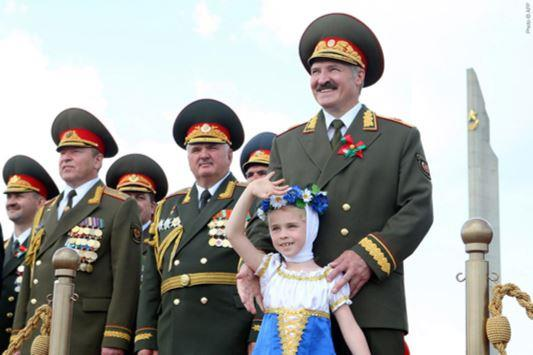
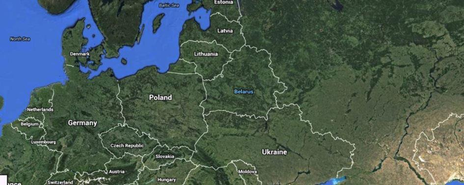
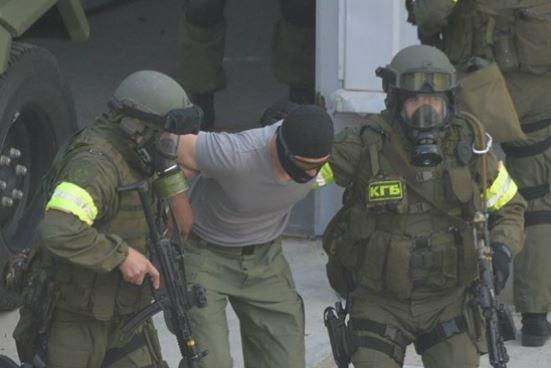
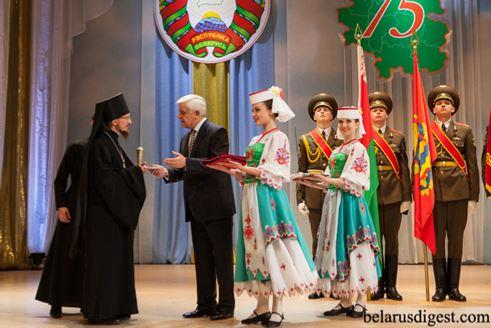
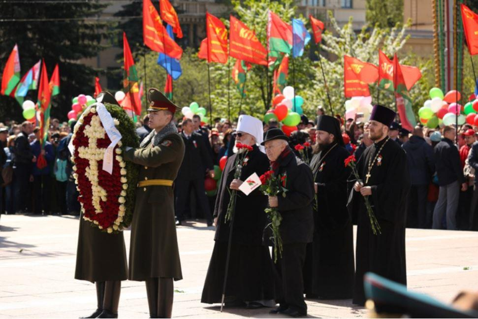
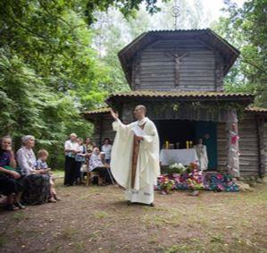
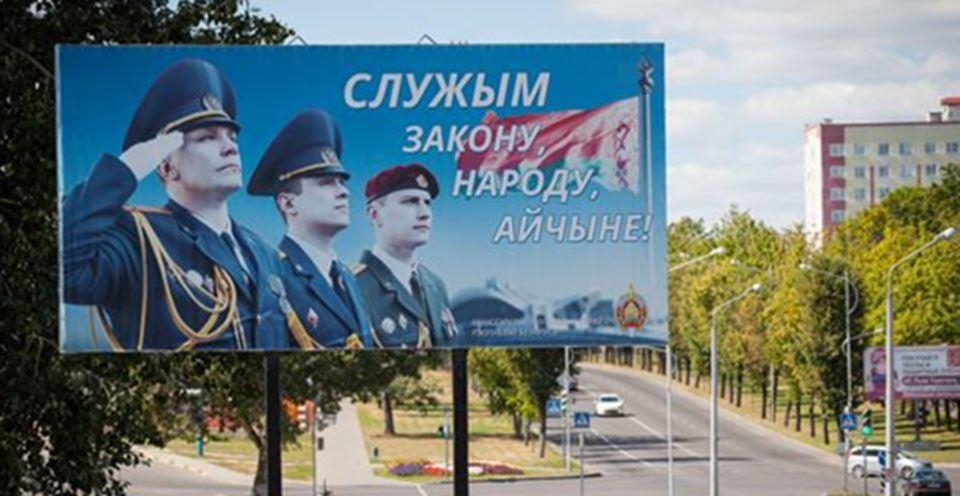
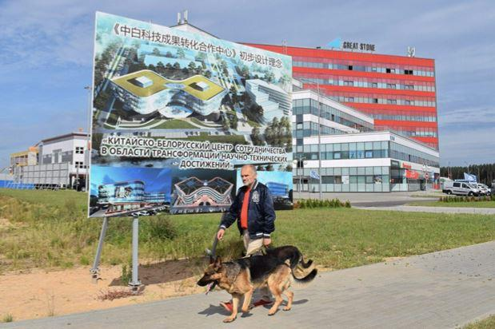

Fin 1991, les dirigeants russe, biélorusse et ukrainien ont enterré l’URSS. Le traité de Minsk, parfois appelé accords de Belaveja mis fin à cette union. Néanmoins en 1994, la Biélorussie est revenue en arrière avec la montée au pouvoir des néo communistes. Par son drapeau, ses emblèmes, ses immenses usines, ses sovkhozes, son architecture urbaine, ses militaires impassibles et son président autoritaire Alexandre Loukachenko, la Biélorussie conserve beaucoup de la République Soviétique qu’elle fut entre 1919 et 1991. Et pourtant, un vent nouveau semble souffler sur le pays. Le président à vie du pays a vu d’un très mauvais œil l’annexion de la Crimée en 2014 par la Russie et surtout la révolution du Maïdan en Ukraine. En effet, la nostalgie de l’URSS et la protection de son puissant voisin russe ne semble plus protéger son dirigeant. Ce dernier s’appuie de plus en plus en interne sur l’Église orthodoxe et sur la Chine en externe pour se maintenir.
Longtemps, le mirage biélorusse a captivé une majorité de la population. Il portait deux noms : ordre et stabilité. Loin des convulsions de la Russie et de l’Ukraine dans les années 1990, Minsk prétendait suivre un chemin sécurisé. Un chemin sur lequel ses citoyens étaient protégés et encadrés par un État tout puissant. Le secteur privé représente moins de 30 % de l’économie.
Pour y veiller le KGB a été reconstitué et punit les « troubles faits ». Les manifestations contre le régime sont sévèrement réprimées. Le régime entretient une représentation infantilisante du peuple, forcément bon, surtout rural, attaché à son folklore, sa terre fertile et ses valeurs.
Le leader Alexandre Loukachenko est le directeur de ce grand kolkhoze. Ancien commissaire politique militaire, il veuille sur son royaume.
Mais de façon générale, le mécontentement de la population reste présent. L'économie ne décolle toujours pas et dépend trop de la Russie.
La Biélorussie reste relativement isolée des pays occidentaux, ce qui n'est certainement pas étranger au fait que le régime politique actuel comporte un relent de « nostalgie soviétique » et se rapproche davantage de la Russie même si il y a conflit économique. Les Unions avec ce puissant voisin se succède, même si la fusion avec la fédération de Russie se rapproche sans fin.
Les ennemis sont tout désignés : l’ancien colonisateur polonais, l’Occident décadent, les oligarques ukrainiens et russes, les islamistes et les ultranationalistes ukrainiens.
En Biélorussie, les nationalistes, souvent issus de la Biélorussie occidentale et de la minorité catholique, pourraient être présentés comme des représentants d'intérêts « polonais », les libéraux, comme étant «au service de la haute finance supranationale ». Personne n’y échappe, les communistes sont décrits comme un « groupe d'intérêt archaïque » peu lié à la Biélorussie profonde.
Signalons que les organisations pour la défense des droits humains ont rapporté plusieurs cas de disparitions suspectes d'anciens dignitaires passés dans l'opposition. Loukachenko fut surnommé comme « le dernier dictateur d’Europe » par les Américains. Il continue, depuis 1994, de maintenir un État providence en échange de restrictions draconiennes des libertés. Depuis 2008, le « leader Maximo » s'affiche ouvertement avec son plus jeune fils Kolia (né en 2004), car il rêve d'en faire son successeur.
La révolution ukrainienne a changé la donne : la Biélorussie craint la colère de son voisin russe autant que les « révolutions atlantistes ».
La nouvelle politique de défense biélorusse, publiée en juillet 2016, désigne, sans la nommer, la Russie comme menace potentielle au même titre que les pays occidentaux, et prend en considération les risques de guerre « non conventionnelle » sur le modèle ukrainien. Loukashenko n’a pas confiance en son armée contre la Russie et malgré les déclarations agressives, il doit trouver d’autres piliers pour consolider son pouvoir.
Depuis quelques années, le président biélorusse a multiplié les actes de sympathie envers l’Église orthodoxe russe. Celle-ci largement majoritaire (plus de 70 % de la population) est en guerre ouverte avec les gréco-catholiques uniates (11 %) et les catholiques polonais.
Loukachenko a utilisé un amalgame de ressentiment contre l’ancienne puissance coloniale polonaise et l’Église uniate ukrainienne qui a soutenu la révolution Maydan pour s’attirer les bonnes grâces de l’Église orthodoxe russe et de ses fidèles. Malgré un laïcisme officiel le pouvoir favorise les orthodoxes et discrimine les catholiques romains et uniates.
L’objectif du pouvoir est également d’affermir l’identité nationale biélorusse dans une population qui parfois se sent d’abord et avant tout russe. La langue biélorusse est en déclin total et est surtout parlée dans les campagnes et à l’ouest. Mais malgré, la domination écrasante du russe comme langue d’usage dans les grandes villes, les Biélorusses cultivent leurs différences : ils seraient « plus pacifiques, plus polis, plus patients, plus propres, plus travailleurs » que les Russes, « plus Européens » en quelque sorte. Les tentatives récentes de différenciations culturelles et linguistiques néanmoins ne convainquent pas grand monde.

Catholiques uniates
La seule chance du régime Loukachenko de sauver son économie planifiée semble d'obtenir un prêt de l'étranger. Or, la Biélorussie ne trouvait qu'un seul prêteur : la Russie. La Russie souhaite des réformes en Biélorussie, notamment des privatisations. Ces privatisations risquent d'être imposées par la Russie, ce qui pourrait signifier la prise de contrôle des sociétés d'État par les oligarques russes, donc sur une bonne partie de l'économie biélorusse. La Biélorusse devenait de fait une dépendance du grand frère russe. Loukachenko a joué une nouvelle carte : la Chine
Depuis quelques années la Biélorussie s’est considérablement rapprochée de la Chine. Cette dernière a très bien été accueilli et les coopérations militaires industrielles économiques et culturelles ont fleuri sur le territoire de l’ex république soviétique. Le parc industriel sino-biélorusse, construit conjointement par les deux pays, est un projet exemplaire de coopération réciproque dans le cadre de l'initiative.
Le 9 mai 2018 pour fêter la victoire sur le nazisme les troupes chinoises ont défilés avec les forces biélorusses. Notant que 2018 marque l'Année de la Biélorussie en Chine et l'Année de la Chine en Biélorussie, le Premier ministre chinois Wang a déclaré que les deux pays allaient en profiter pour attirer les touristes de part et d'autre.
Le dragon chinois est-il rentré en Europe par sa dernière dictature ?
F.L.
Bibliographie :
Ioula Shukan, La Biélorussie après la crise ukrainienne : une prudente neutralité entre la Russie et l’Union européenne ? Etudes de l’IRSEM, 50, mars 2017.
Le dessous des cartes Arte Jean Christophe Victor en 2015.
How Belarus becomes China’s gateway to Europe Kyivpost par By Bermet Talant. Published Sept. 13 2018.
The Growing Power of the Belarusian Orthodox Church – Belarus Photo Digest Siarhei Leskiec Septembre 2015.
Partager cette page